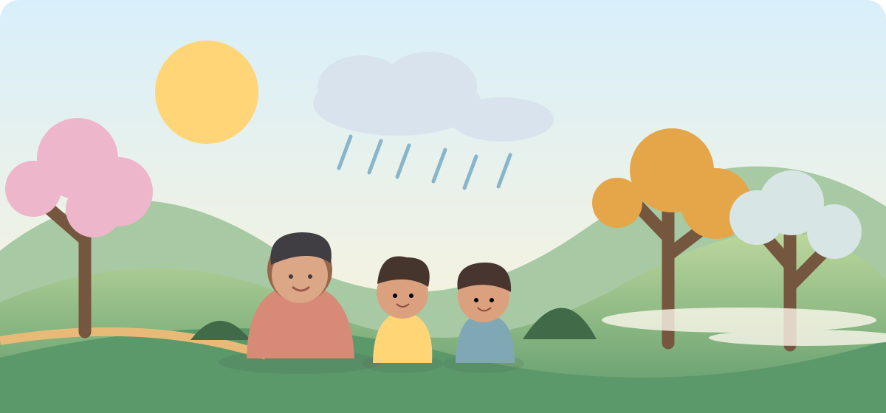

FREE KANNADA ORAL ACTIVITY · 01
ಪುರೋಚಿ
ನಮ್ಮ ಬಾಲ್ಯದ ಮಾತಿನ ಆಟಗಳು — ನಮ್ಮ ಮಕ್ಕಳಿಗಾಗಿ.
Traditional Kannada recitations to listen, repeat and remember. No worksheets, no screens — just a few minutes together.

ತಿಂಗಳು ಮತ್ತು ಋತುಗಳು · Months & Seasons
ಚೈತ್ರ, ವೈಶಾಖ — ವಸಂತ ಋತು
ಮೊದಲು ಪೋಷಕರು ನಿಧಾನವಾಗಿ ಹೇಳಿ. ನಂತರ ಮಗು ನಿಮ್ಮ ಜೊತೆ ಹೇಳಲು ಅವಕಾಶ ಕೊಡಿ.
01 · VASANTAಚೈತ್ರ, ವೈಶಾಖವಸಂತ ಋತು · Spring
02 · GRISHMAಜ್ಯೇಷ್ಠ, ಆಷಾಢಗ್ರೀಷ್ಮ ಋತು · Summer
03 · VARSHAಶ್ರಾವಣ, ಭಾದ್ರಪದವರ್ಷ ಋತು · Rainy season
04 · SHARADಆಶ್ವಯುಜ, ಕಾರ್ತಿಕಶರದೃತು · Autumn
05 · HEMANTAಮಾರ್ಗಶಿರ, ಪುಷ್ಯಹೇಮಂತ ಋತು · Early winter
06 · SHISHIRAಮಾಘ, ಫಾಲ್ಗುಣಶಿಶಿರ ಋತು · Late winter
🎧 ಕನ್ನಡ ಧ್ವನಿಮುದ್ರಣ: ಈ ಚಟುವಟಿಕೆಯ ಆಡಿಯೊವನ್ನು ವೆಬ್ಸೈಟ್ಗೆ ಸೇರಿಸುವ ಕೆಲಸ ಬಾಕಿಯಿದೆ. Audio upload pending; the written activity is ready to use.
PLAY IT TOGETHER
ಮಗುವಿನ ಜೊತೆ ಹೀಗೆ ಪ್ರಯತ್ನಿಸಿ
- ಮೊದಲ ಎರಡು ಸಾಲುಗಳನ್ನು ನಿಧಾನವಾಗಿ ಹೇಳಿ.
- “ಚೈತ್ರ, ವೈಶಾಖ — ಯಾವ ಋತು?” ಎಂದು ಕೇಳಿ.
- ವಸಂತದಲ್ಲಿ ಹೂವು, ಬೇಸಿಗೆಯಲ್ಲಿ ಬಿಸಿಲು, ಮಳೆಗಾಲದಲ್ಲಿ ಮಳೆಯ ಬಗ್ಗೆ ಮಾತನಾಡಿ.
- ಮಗು ಹೇಳಲು ಪ್ರಯತ್ನಿಸಿದಾಗ ಪ್ರೋತ್ಸಾಹಿಸಿ; ಕಂಠಪಾಠಕ್ಕೆ ಒತ್ತಡ ಬೇಡ.